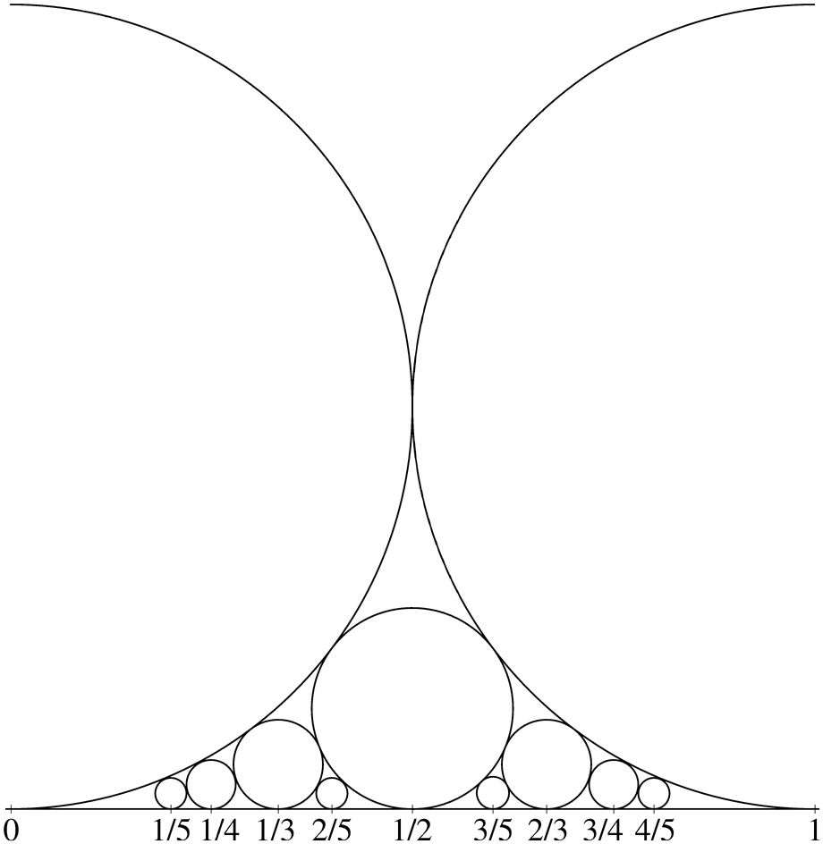

A Balance of Powers
Thursday, November 19, 2015 · 5 min read
Wikipedia has an amusing article on “mathematical coincidence”, where they say that it’s a “coincidence” that ($ 2^{10} $) is very close to 1000 (it’s actually 1024). This is why it’s occasionally confusing whether you mean 1000 or 1024 bytes when you say “kilobyte”.
I’m not sure whether this is something to get excited about, but you know what we say about coincidence…
Here are some fun facts to inspire today’s post:
($ 2^{12864326} \approx 10^{3872548} $) to within 0.0001%, which means it begins with the digits “10000000…”.
($ 1337^{47168026} \approx \pi\cdot10^{147453447}$) to within 0.00000001%. It begins with the digits “31415926…”.
The hex expansion of ($ e^{19709930078} $) is around 10 billion digits long, and it begins with the digits
deadbeef....
There is definitely something going on here. It’s time to investigate!
Let’s go back to powers of two. It really comes down to the fact that we’re trying to solve equations that look somewhat like this one
\[ 2^{\alpha} = \delta10^{\beta} \]
for integers, where we can make ($ \delta $) as close to 1 as we want.
It should feel intuitive to take logs of both sides at this point. So let’s go ahead and do that:
\[ \alpha \ln(2) = \ln(\delta) + \beta\ln(10) \]
Since ($ \delta $) is close to 1, its natural log is close to 0. So this equation reduces to finding a very close rational approximations of the ratio of the natural logs of 2 and 10.
Rational approximation, also called Diophantine approximation, is the “art” of finding rational numbers very close to real numbers. Since the rationals are dense in the reals, we can find a rational number arbitrarily close to any real number. The naïve way to do this is to simply take the decimal expansion to as many digits as we want. So, for example, we can find rational approximations of pi such as 3/1, 31/10, 314/100, etc.
So, it follows that we can find arbitrarily precise rational approximations of ($ \ln(10) / \ln(2) $), which is what we’re looking for! The numerator gives the power of 2 and the denominator gives the power of 10.
That ratio is around 3.321928094, so ($ 2^{3321928094} $) should be really close to a power of 10, right?
…wrong. The power of 10 is spot-on, but our first digit is completely off. This is tragic! We’re close, but not close enough.
How can we fix this?
We could add more digits, but eventually WolframAlpha stops doing those calculations for us. (There’s a nice online calculator here that seems to handle much bigger problems, but loses precision eventually.)
The problem is that even though we’re close, we’re not close enough. Remember that our worst-case scenario with the decimal-truncation strategy is that we’re off by ($1/\beta$). That is, we have
\[ \left| \frac{\alpha}{\beta} - \frac{\ln(10)}{\ln(2)} \right| = \frac{1}{\beta} \]
Rearranging this a little bit, we have:
\[ \alpha \ln(2) = \ln(2) + \beta\ln(10) \]
In other words, we have:
\[ 2^\alpha = 2\times10^\beta \]
We could be off by up to a factor of two! That means that even though our rational approximation is getting closer, our first digit could still vary pretty randomly.
What’s an easy fix here? We could start by rounding rather than truncating. This means our worst-case scenario drops to ($ 1/(2\beta) $) (why?), which corresponds to being off by up to a factor of the square root of two (around 1.4).
If we round the example above, we get ($ 2^{3321928095} $), which is better. But percent-error wise, we’re still doing worse than ($ 2^{10} $). We need to take more drastic measures.
It turns out that there is a way to find the best rational approximation of a number for a given denominator. This is a beautiful field of number theory that relates images like the one below to computing GCDs efficiently.

I’ll leave it to you to discover the math on your own, but the result we seek is Dirichlet’s approximation theorem, which states that we can always find a rational approximation which is within ($ 1/(\beta^2) $) of the target. In fact, there are an infinite number of such rational approximations, which means ($ \beta $) can get as large as we want (why?).
Since we have a ($ \beta^2 $) term in the denominator, the error decreases faster than the denominator. This means we can get within ($ 2^{(1/\beta)} $) of a power of 10. Since there’s a factor of ($ \beta $) in that expression, we can make it as large as we want to get as close to a power of 10 as we want! Win!
How do we compute these best rational approximations? The trick is to express our target number as a continued fraction, and then to simplify those continued fractions.
It’s not hard to write code to do this quickly. WolframAlpha and Mathematica
come with a built-in function Rationalize that does exactly what we want.
With a little twiddling of the “delta” parameter, we can
get
approximations within whatever interval we want, and they
work!
Pushing this gives us lovely results, like ($ 2^{44699994} $), which is around ($ 9.9999997\times10^{13456038} $), within 0.0000003% of a power of ten. Wonderful.
The natural question to ask now is whether we can do even better. Can we get an arbitrary sequence of digits at the beginning of the result? It turns out we can. By manipulating Euclidean algorithm a bit, we can generate any remainder, not necessarily one that is close to zero. Since the remainder controls the first few digits, we need to find an approximation with error ($ \ln(\delta) $).
The trick is to use a “secondary” version of the Euclidean Algorithm where we approximate ($ \ln(\delta) $) by adding together the errors of successively more precise approximations.
Here’s an example. Suppose we compute a series of rational approximations of a number and we get the following two rows:
| Numerator | Denominator | Error |
|---|---|---|
| 2 | 1 | 0.0131 |
| 175 | 87 | 0.0028 |
Adding these two rows gives us a new row:
| Numerator | Denominator | Error |
|---|---|---|
| 177 | 88 | 0.0159 |
(Why does this work?)
This gives us an approximation with error 0.0159. We can keep doing this in a method that resembles a cross between Gaussian elimination in matrices and the Euclidean algorithm for integers, and get as close as we want to any target “error”.
You can download a Python program I wrote to generate these expressions
here. It uses the lovely
mpmath library. A sample session with it, used to
compute one of the examples above:
$ !!
Prefix? --> 0xdeadbeef
Base? ----> e
Radix? ---> 16
Accurate to 4 digits:
2.71828182845905^16311 ~~ 3735928559*16e+5875
Accurate to 5 digits:
2.71828182845905^4407903 ~~ 3735928559*16e+1589807
Accurate to 7 digits:
2.71828182845905^1044698524 ~~ 3735928559*16e+376795337
Accurate to 7 digits:
2.71828182845905^1044698524 ~~ 3735928559*16e+376795337
Accurate to 7 digits:
2.71828182845905^5021368668 ~~ 3735928559*16e+1811075911
Accurate to 7 digits:
2.71828182845905^5021368668 ~~ 3735928559*16e+1811075911
Accurate to 8 digits:
2.71828182845905^19709930078 ~~ 3735928559*16e+7108854587
If you enjoyed that journey, here are some exploration questions:
- What happens when your base is 2 and your radix is 16? Why?
- How is this related to Euclid’s Orchard? Does exploring Euclid’s orchard give a natural way to prove Dirichlet’s approximation theorem? As a hint, what principle is named after Dirichlet?